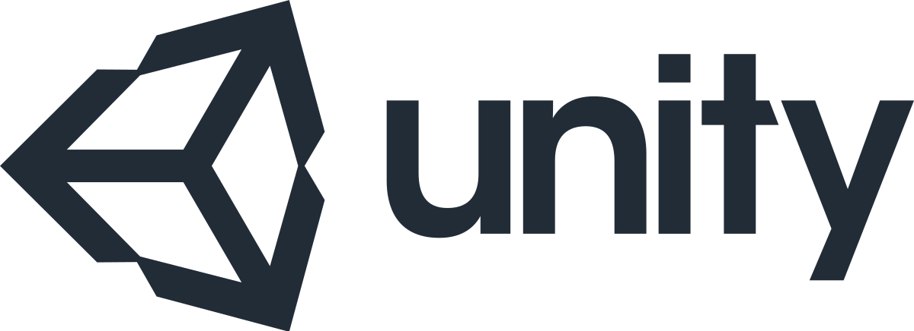

十大遊戲開發引擎優缺點對比
Unity3D
Unity3D具有其他引擎難以匹敵的用戶量而且你只需要付費一次，這對於很多開發商來說當然是非常具有吸引力。以下是Unity引擎的優點和缺點：

優點：業內最具競爭力的授權條款；易於使用而且兼容所有遊戲平台；開發者社區支持強大；學習門檻非常第；開發商使用率最高。
缺點：工具數量有限，所以開發商必須給自己創作工具；做複雜和多樣化的效果比較耗時。
虛幻引擎
數年以來，虛幻引擎一直是做高端EA遊戲最受歡迎的引擎。《戰爭機器》、《蝙蝠俠：阿卡漢姆瘋人院》(Batman: Arkham Asylum)、《質量效應》以及很多大作都是出自該引擎之手，以下是虛幻引擎的優點和缺點：

優點：開發商使用率較高，開發商社區支持支持強大，有視頻教程和大量資源。最佳的引擎支持並且隨時更新其他引擎平台的功能，每次更新都會增加新工具，而且管理相對容易，有些工具甚至小學生都會使用。兼容大多數平台，比如iOS、Android、Linux、Mac、Windows和大多數遊戲主機。
缺點：授權條款只適合大作，商業授權價格為99美元，在遊戲收入超過5萬美元之後，必須支付25%的分成。也有一些開發者抱怨有些工具不好用，學習門檻較高。
CryEngine 3
該遊戲引擎以優質的畫面輸出獲得了大量開發者認可，如果你要做視覺出色的遊戲，這款引擎絕對是最理想的選擇。不過，該引擎也有自己的問題。

優點：CryEngine 3可以讓你的遊戲更美麗，Flowgraph工具的美術編程能力非常強悍。該引擎具備最強悍的音頻工具，所以音頻策劃和程序猿們非常喜歡。該遊戲引擎還提供目前最為簡單易用的AI代碼技術，對於初入行的開發者，該引擎的UI觸手可及。
缺點：免費榜缺乏客戶支持；推出時間相對較晚，開發者社區還不夠強大；學習門檻對於初入行這比較高。
HeroEngine
該引擎在MMO和在線遊戲領域獲得了非常高的人氣，代表作《星球大戰：舊共和國》。對於新入行的開發者以及初創公司來說，授權費用較高，不過，如果你有一個非常具備潛力的項目，該引擎還是非常值得考慮的。以下是使用該引擎之前需要考慮的優點與缺點：

優點：提供多個開放世界地圖，而且可以實現無縫轉換；提供相對完善的AI；地圖工具簡單易用，並且集成了多個工具；腳本強大，足夠幫助開發者研發複雜的項目、獲得需要的資源；可以通過HeroCloud支持客戶服務器。
缺點：腳本引擎強大但不夠直觀；HeroEngine和HeroCloud對於初創公司來說成本較高；新開發者學習門檻較高。
Rage Engine
該引擎的用途非常多，比較知名的遊戲包括GTA Ⅲ、GTA：Vice City、GTA：San Andreas和很多知名大作。以下是該引擎的一些優點和缺點：

優點：兼容與處理較大世界觀和天氣特效方面非常出色；複雜的AI設計方面領先其他引擎；非常適合多種玩法的遊戲；網絡編程速度非常快；非常具有吸引力的畫質水平。
缺點：和其他頂級引擎相比界面比較差；對於鍵盤和鼠標控制優化做的不足。
Project Anarchy
該引擎是一套完整的端到端遊戲引擎和尖端移動設備工具組，受到很多遊戲開發者讚譽，但同樣具有一些缺點。

優點：提供免費的手游研發工具(主要平台，比如iOS、Android和Tizen)；擁有非常強悍的程序調試工具；非常活躍的開發者社區與論壇；編輯器非常強大；音頻輸出能力非常好；優秀的Havok AI；vForge為開發者提供大量的定制化選擇。
缺點：不支持Mac和Linux開發環境；沒有新手教學；對於初創公司來說成本較高。
GameSalad
這款引擎據說是不用寫代碼就能做遊戲。這並不是個噱頭，該引擎的確支持這樣的功能。不過GameSalad一些功能也並不好用。

優點：如果你想獨立開發一款iPhone遊戲，該引擎非常適合你；對於快速實現遊戲想法來說，GameSalad是個不錯的引擎；兼容流行的手游研發平台，比如Cocona和Moai。
缺點：研發工具限制性比較強；缺乏大量的iOS功能；不兼容所有的平台。
GameMaker：Studio
作為開發者，如果你想要一款簡單而又快速直接的遊戲引擎開始項目，那麼GameMaker：Studio絕對是理想之選；儘管授權費有些貴，但能夠獲得的功能還是物有所值的；以下是該引擎的優點和缺點：

優點：對於所有開發者來說都非常簡單和直接；加入了編程語言(GML)；不需要處理內存管理或者多線程等方面的任務；獨立於任何平台。
缺點：在內存問題方面的程序調試比較麻煩；授權費相對昂貴。
App Game Kit
該引擎是真正的跨平台研發工具，非常易用、簡單，而且比較靈活。以下是該引擎的優缺點：

優點：可以為多平台寫代碼，包括Android、iOS、Windows、Mac和Linux；集成Design Environment，可以在任何設備調試；加入了IAP、AdMob以及Push等工具；AGK腳本非常強大。
缺點：使用者較少，所以學習起來相對較慢；BUG比較多；傳感器或者GPS支持比較差。
Cocos2D
很多策劃認為Cocos2D對於新入行的開發者來說不僅具備大量功能，而且非常容易上手。雖然該引擎比較複雜，但值得一提的是其功能和靈活性，以下是該引擎的優缺點：

優點：強大而且靈活；理論上來講，你可以為自己的遊戲加入所有的iOS功能；提供成熟的框架和多種工具；開源、免費，社區支持強大。
缺點：和同類引擎相比比較複雜；學習門檻相對較高；特別適合Mac或者iOS平台，不過並不是跨平台引擎。
如今人們在各種平台都玩遊戲，比如主機、移動設備甚至是智能電視，所以，開發商在選擇引擎的時候，需要找到適合自己技術並且能夠滿足目標市場要求的引擎，因此合適的引擎對於開發商們來說尤其重要，特別是新入行的開發者們
https://blog.csdn.net/enweitech/article/details/72820183
week12 << Previous Next >> week13